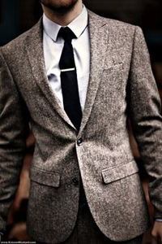

Несмотря на присутствие индивидуального подхода, стиль - это нечто универсальное, базирующееся на определённых правилах, следование которым и позволяет выглядеть человеку стильно. Могут ли мужчины с лишним весом или низким ростом выглядеть стильно и привлекательно? Да, вполне, если они следуют правилам, подчеркивающим стиль мужчин.
Идеальный крой и полное соответствие размеру – критерий первостепенной важности при выборе практически любой вещи для мужского гардероба.
Не забывайте, что цвет рубашки всегда должен быть светлее тона костюма. Такой цветовой прием позволяет сделать фигуру визуально более стройной и подтянутой. Если вам часто приходится носить костюмы, позаботьтесь о том, чтобы в вашем гардеробе были костюмы темно-синего, серого и черного цвета. Эти базовые тона позволят вам достойно выглядеть на любом мероприятии.
В свободное от работы время поменяйте офисный костюм на более непринужденный и мягкий образ. Наденьте джинсы, футболку, замшевые туфли. Стильный образ - это же не только костюм с иголочки и дорогие кожаные туфли
Детали из качественной кожи идеально сочетаются с объемными вязаными вещами.
Не стоит заправлять джинсы в ботинки, просто подверните низ брюк.
Слишком длинные шорты – признак дурного вкуса, лучше сделать аккуратные отвороты, так же как вы делаете это с джинсами. Шорты в комбинации с полосатой футболкой в морском стиле – классика летнего повседневного гардероба.
